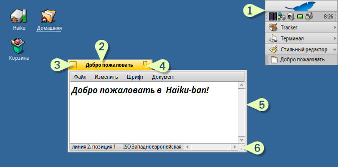
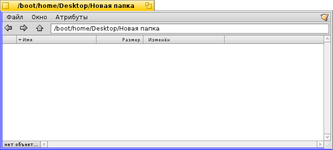
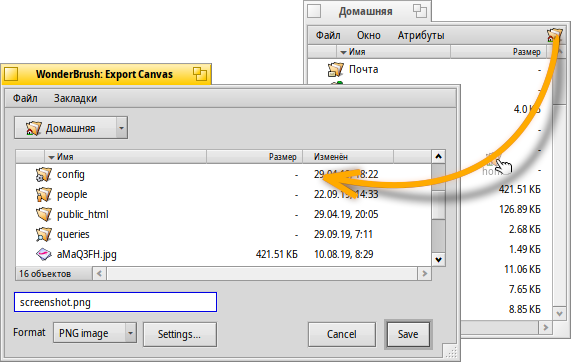
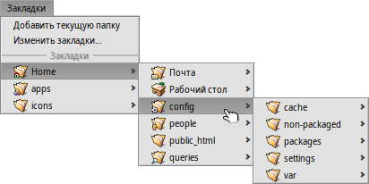

Русский
Русский Français
Français Deutsch
Deutsch Italiano
Italiano Español
Español Svenska
Svenska 日本語
日本語 Українська
Українська 中文 ［中文］
中文 ［中文］ Português
Português English
EnglishГрафический интерфейс Haiku
Графический интерфейс Haiku является неотъемлемой частью системы. В отличие от Unix-подобных операционных систем, здесь нет отдельного менеждера окон и невозможно загрузиться только в оболочку командной строки. Haiku нацелена на десктоп-пользователей.
Так как вы, вероятно, уже имели дело с другими графическими средами, давайте опустим обсуждение стандартных вещей вроде меню, контекстного меню, вызываемого правым щелчком мыши, перетаскивания объектов, и т.д. Вместо этого давайте перейдем к уникальным особенностям графического интерфейса Haiku.
Есть несколько вещей в графическом интерфейсе Haiku, которые нуждаются в объяснении.
Панель задач, именуемая Deskbar, является аналогом меню "Пуск". Для более подробного изучения следует обратиться к теме Deskbar - Панель задач.
- Желтый заголовок окна предлагает немного больше, чем просто название программы и название документа:
- Вы можете передвинуть его, удерживая клавишу SHIFT и перемещая в другую позицию. Если расположить ряд окон, то можно получить удобный доступ к ним по именам на заголовках окон.
- Свернуть окно можно при помощи двойного щелчка на его заголовке (или при помощи комбинации клавиш CTRL ALT M). Доступ к свернутым окнам можно получить при помощи панели задач Deskbar или Twitcher.
- Вы можете отправить окно на задний план при помоши правого щелчка мыши по заголовку или по краю окна.
Кнопка закрытия окна.
Позволяет развернуть окно на весь экран (или при помощи комбинации клавиш CTRL ALT Z).
Кнопка изменения размера окна. Потяните в любую сторону и окно поменяет свой размер.
 Быстрый способ перемещения и изменения размера окон
Быстрый способ перемещения и изменения размера окон
Перемещение и изменение размера окон очень важный аспект при работе паралельно с несколькими программами. Вместо того чтобы дёргать за желтый ярлычок (читайте заголовок окна) или за тоненькие грани окна, либо за нижний правый угол, но есть более простой способ переместить окно.
Haiku предоставляет удобное чёткое решение данной проблемы - сочетание клавиш CTRL ALT и мыши. Для более подробного изучения управления окнами при помощи горячих клавиш обратитесь к теме Горячие клавиши
Во время удержания клавиш CTRL ALT вы увидите, как подсвечиваются границы окна, в зависимости от того к какому из краёв указатель мыши находится ближе. Нажмите и удерживайте правую кнопку мыши и потяните, окно изменит размеры по направлению подсвеченных границ окна.
Во время удержания клавиш CTRL ALT нажмите и удерживайте левую кнопку мыши и потяните окно за любую область, таким образом вы сможете быстро переместить окно. Быстрый щелчок правой кнопкой мыши отправляет окно на задний план.
Диалоги открытия и сохранения
При сохранении или открытии файла в любом приложении вы увидите такое диалоговое окно:
Оно содержит все привычные вещи: список файлов в текущей папке, поле для названия файла (в случае диалога сохранения) и выпадающее меню для разных форматов файлов и настроек.
Вы можете также выбрать папку для сохранения или открытия в выпадающем меню в верхней части диалогового окна.
Если у вас уже открыто окно файлового менеджера Tracker, вы можете просто перенести любой файл или папку из него (в том числе символ из верхнего правого окна) в диалог сохранения или открытия. Это изменит текущий путь диалога открытия или сохранения (изображение выше это иллюстрирует).
Горячие клавиши
Вы можете использовать большинство горячих клавиш, которые используются в файловом менеджере Tracker. А также команды, которые доступы через меню . Вот некоторые из них:
| ALT N | Создать новую папку. | |
| ALT E | Переименовать выбранный файл или папку. | |
| ALT ↑ | Открыть папку уровнем выше. | |
| ALT ↓ or ENTER | Открыть выделенную папку. | |
| ALT D | Перейти в папку, содержащую файлы с рабочего стола. | |
| ALT H | Перейти в домашнюю папку. |
Избранные и недавно открытые папки
Меню обеспечивает доступ к недавно посещенным папкам и избранным местам, которые вы можете установить сами. Вы также можете использовать их для навигации.
Чтобы добавить что-нибудь в избранное, просто перейдите в нужное место и выберите в меню . Отныне эта папка будет доступна в любом диалоге открытия или сохранения. Для удаления чего-либо из избранного, выберите и удалите.
Все избранные папки хранятся по следующему пути /boot/home/config/settings/Tracker/Go/. Таким образом вы можете добавлять или удалять ссылки на файлы или папки непосредственно там.
Репликанты
Репликанты - это небольшие автономные части приложений, которые могут быть интегрированы в другие приложения. Если активировать в Deskbar опцию , то вы сможете отличить область репликанта по маленькому значку в правом нижнем углу:

Наиболее подходящим местом для репликантов является Рабочий стол: просто перетащите репликант за эту маленькую иконку в правом нижем углу на рабочий стол. Теперь репликант является частью рабочего стола и для его работы не требуется запуска оригинального приложения.
Правым щелчком мыши по маленькой иконке в правом нижнем углу можно вызвать контекстное меню, которое содержит пункты и .
Примерами репликантов являются ActivityMonitor, Workspaces applet и DeskCalc.